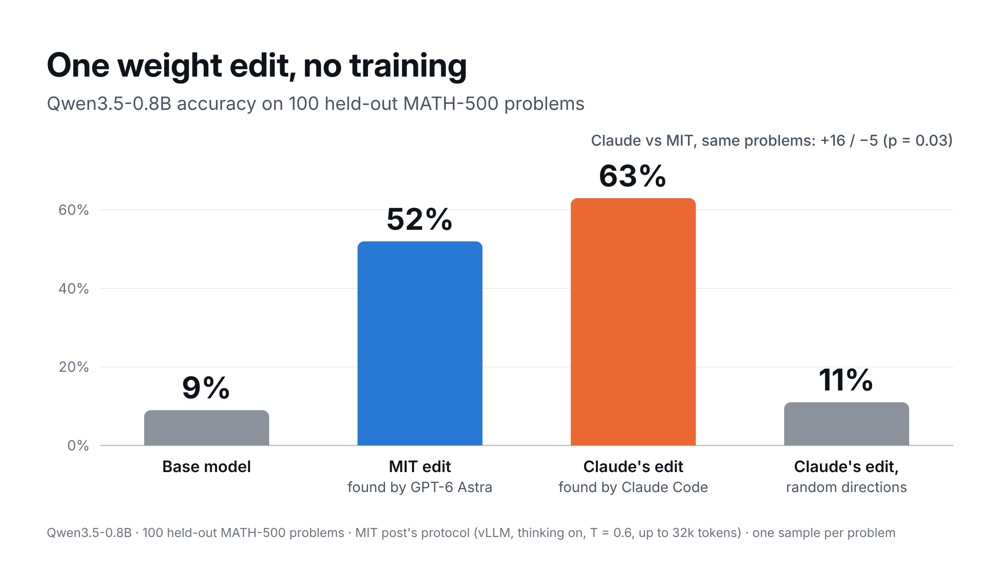
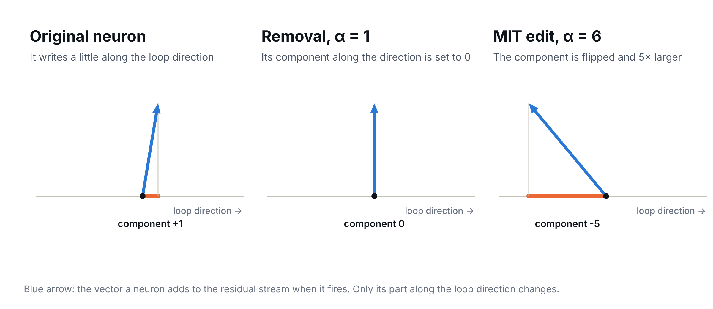
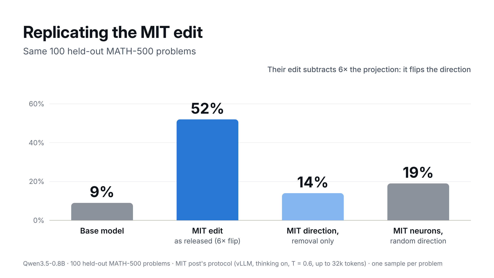
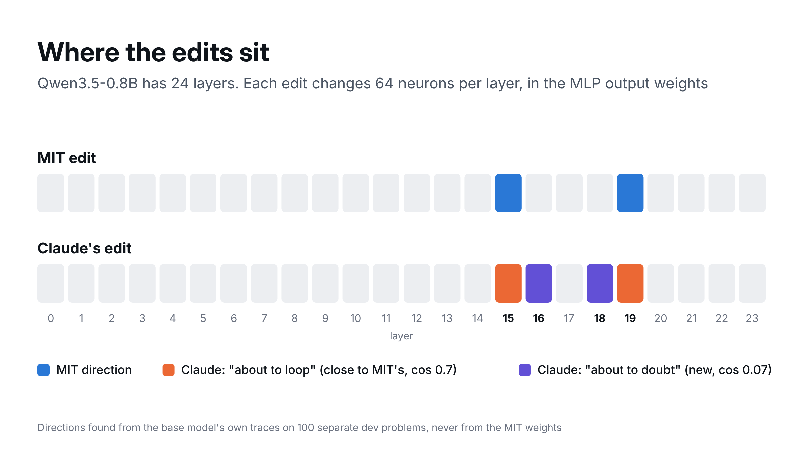
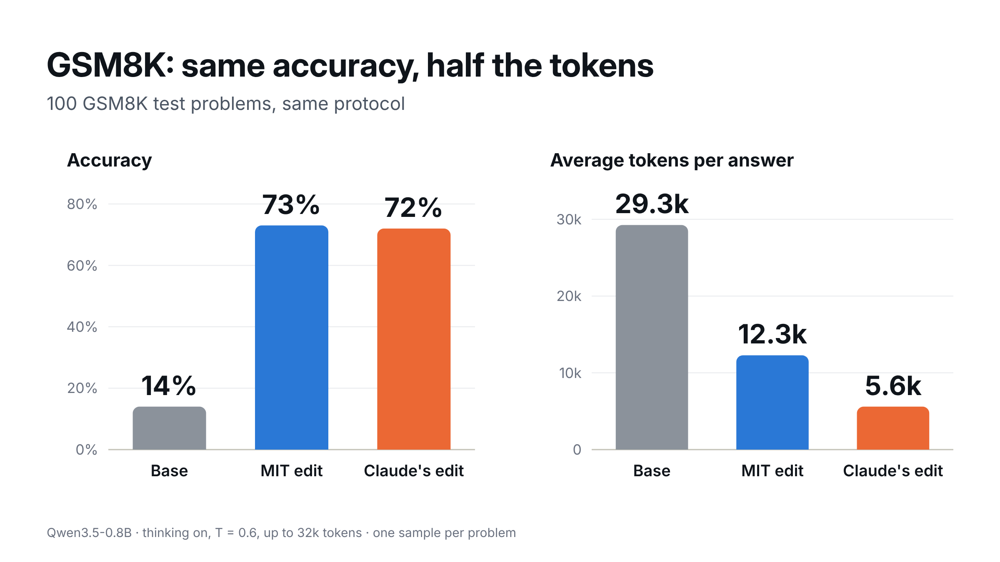

Weight-space programming, reproduced
MIT showed an AI fixing another model by editing its weights directly. We checked it, added the controls it was missing, and asked Claude to find its own edit. It found a better one.
- MIT's edit of Qwen3.5-0.8B holds up: from 9% to 52% on 100 held-out MATH-500 problems, with their exact protocol.
- Claude found its own edit from the model's behaviour alone. It corrects two internal "directions" instead of one.
- Result: 63% on the same problems, with shorter answers. The same edit along random directions gets 11%.

1. The problem: a model that can't stop thinking
Qwen3.5-0.8B has a "thinking" mode: it reasons before it answers. On hard problems, it often never answers. It doubts, starts over, and eventually repeats the same lines until it runs out of room. With the MIT post's settings, 93% of its answers hit the 32,768-token limit. A real excerpt:
Wait, where did I make a mistake in the previous step?
Wait, $5t \cdot bt = 5b t^2$.
Wait, $5t \cdot bt = 5b t^2$.
Wait, $5t \cdot bt = 5b t^2$.
… (repeated until the token limit)The MIT team asked GPT-6 Astra to fix this without any training. Astra found a cause inside the weights and changed 0.016% of them. Math accuracy jumped from 7.9% to 48.1%.
2. The idea in one minute
Inside the model, each word is represented by a list of 1,024 numbers that every layer updates. Each layer contains thousands of small units, "neurons". When a neuron fires, it adds a fixed list of 1,024 numbers to that representation. That list is one column of a weight matrix.
A behaviour such as "I am about to loop" often shows up as a direction in that 1,024-dimensional space: when the model is heading into a loop, its representation points a little more that way. You can find such a direction by comparing the model's internal state in two situations and taking the difference of the averages.
To edit the behaviour, you pick the few neurons that push hardest along that direction and change their columns so they push less, or in the opposite direction. A strength α sets how much:

Why controls matter. Changing any 128 neurons might shake the model out of a loop by luck. So each edit is compared with a control: same neurons, same size of change, but a random direction. If the control does as well, the direction was not the reason.
3. Step one: reproducing MIT's edit
We used their protocol exactly (vLLM, thinking on, temperature 0.6, up to 32,768 tokens, math-verify grading) on 100 MATH-500 problems that were never used for anything else.

Their result holds: 9% → 52%. The control they did not run gets 19%, so their direction really matters. One detail differs from the post: it describes deleting the direction, but the released weights subtract it six times (α = 6), which flips it. Deleting it only (α = 1) gives 14%.
4. Step two: letting Claude find its own edit
The rules: Claude could only use the original model's own answers on 100 separate "practice" problems. It never used MIT's weights. Every choice was made on the practice problems, and the 100 test problems were used only for the final verdict.
- Find the loops. Generate long answers and mark where each loop starts (around token 5,800, typically).
- Direction 1, "about to loop". Compare the model's internal state just before a loop with its state during normal reasoning earlier on.
- Direction 2, "about to doubt". Compare the state just before it writes "Wait", "No" or "But" with the state just before "So", "Then" or "Thus".
- Find who writes each direction. Measure how much each layer's neurons push along it, and keep the 64 strongest neurons in the top two layers.
- Pick the strength on the practice problems: α = 8 for the first direction, α = 4 for the second.

The first direction landed in MIT's layers, 15 and 19, and turned out close to MIT's own direction: a similarity of 0.7 on a scale where unrelated directions score near 0. It was rediscovered independently. The second direction is new. It sits in layers 16 and 18 and is unrelated to MIT's (similarity 0.07).
Not everything worked. The first attempt looked at the state inside a loop and changed nothing, even at α = 8. More neurons, more layers or more strength did not help either. What worked was looking at the moment before the loop, and combining two different mechanisms.
5. Results
| 100 held-out MATH-500 problems | Accuracy | Hit the token limit | Avg. tokens |
|---|---|---|---|
| Base model | 9% | 93% | 31,136 |
| MIT edit | 52% | 32% | 21,198 |
| Claude's edit | 63% | 21% | 13,576 |
| Claude's edit, random directions | 11% | 89% | 30,389 |
Problem by problem, Claude's edit solves 16 that MIT's misses and misses 5 that MIT's solves (p = 0.03). On GSM8K, a different set of math word problems, the two edits are tied, but Claude's answers are much shorter:

A plausible reading: MIT's edit stops the model from spiralling into a loop. The second direction also stops it from second-guessing every step. With both fixed, the model commits to an answer.
6. What it means
The core claim is real. A model can be repaired by editing a tiny fraction of its weights, about 0.03% here, with no training at all. Random edits of the same size do nothing.
But "an LLM natively reads weights" oversells how it works. What worked here is ordinary interpretability done carefully: compare internal states, find which neurons are responsible, check against controls, and keep test problems separate. A capable AI agent with GPUs can now run that loop on its own.
Limits
- 100 test problems, one answer each. The gap over MIT's edit (p = 0.03) still needs confirming on all 500 problems.
- Claude's edit changes twice as many weights as MIT's (262,144 vs 131,072).
- About 20 variants were tried on the practice problems before choosing one.
- Claude knew which layers MIT had edited before it started.
- The protocol's temperature (0.6) makes loops worse. At Qwen's recommended 1.0, the unedited model already goes from 8% to 23% on the practice set.
Reproduce it
The whole edit fits in a 47 KB file: two directions of 1,024 numbers and 64 neuron indices per layer. apply_edit.py applies it to the original model.
- edit_compact.json: the edit · apply_edit.py: apply it to Qwen/Qwen3.5-0.8B
- results_summary.csv: all 40 runs · per-problem results for the key runs
- Problem lists: test, practice, GSM8K · all code (Modal + vLLM)
- Compute: about 6 H100-hours in total (roughly $24).